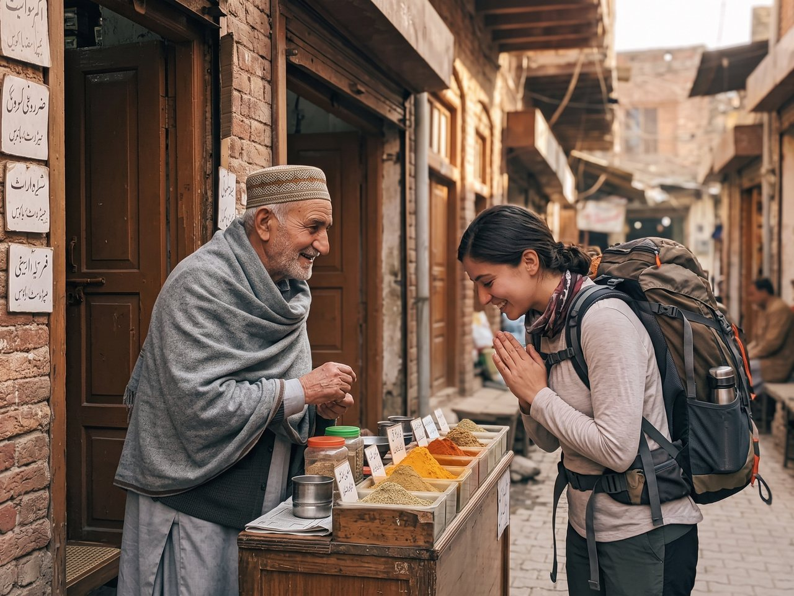
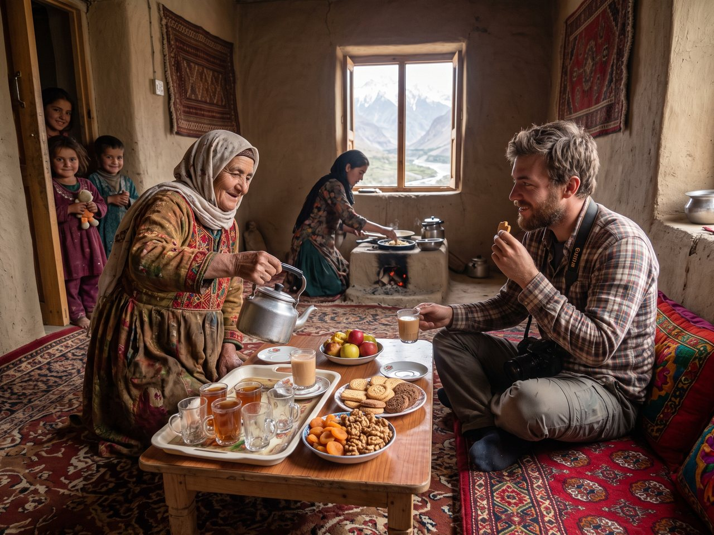
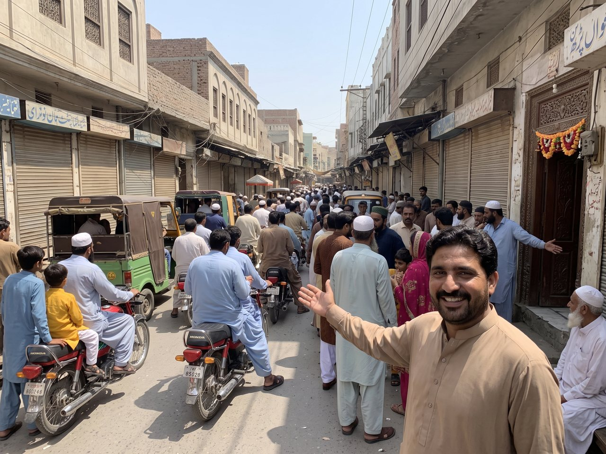
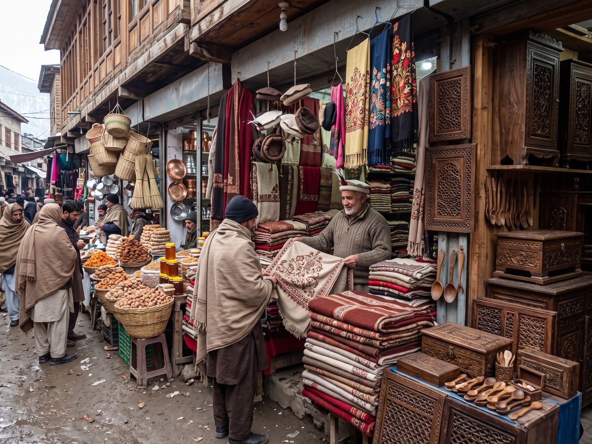
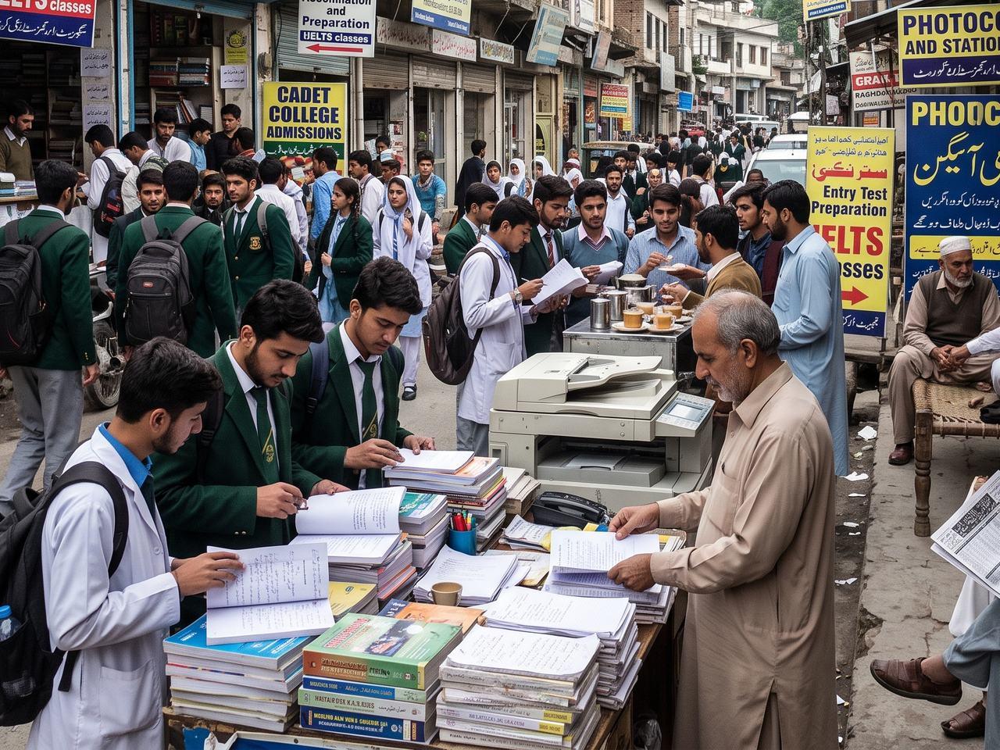

Four languages, one teapot
Abbottabad is a hill city that talks. Hindko in the house, Pashto down the street, Urdu in the shop, English on the exam paper — and tea arriving before you have finished saying hello. This is what the place is actually like to be in.
01 · Language
Hindko first, then everything else
The language of the valley is Hindko — an Indo-Aryan language spoken across Hazara and in pockets of Peshawar and the Attock district. It is what you hear in homes, in the older bazaars and between strangers who recognise each other as local, and speakers of it are the reason people here call themselves Hazarewal or Hindkowan rather than anything narrower.
Around it sit three more. Pashto is widely spoken, particularly in Pashtun families and towards Mansehra and the west. Urdu is the common ground — the language of school, television, government forms and any conversation with a visitor. English runs through education and officialdom, and in a city this full of colleges that means a lot of people switch into it without thinking. Gojri, Kashmiri and Pahari turn up in the surrounding valleys too.
Nobody expects you to arrive with Hindko. But shukriya for thank you, and a returned assalam-o-alaikum, will change the temperature of every interaction you have here.

02 · Hospitality
The guest outranks everyone
Mehman nawazi — the honouring of guests — is not a quaint local custom here, it is a rule with teeth. Arrive at a house and tea appears whether or not you asked, usually with biscuits, dried fruit or whatever was in the kitchen. Say you are not hungry and food will still be cooked. Try to pay for a meal you have been invited to and you will lose, politely but comprehensively.
The logic behind it is old and mountain-shaped: in a region of long distances and hard winters, a traveller's welfare was everybody's business. What survives is a strong instinct that the visitor should be fed first, seated best and never allowed to feel like an inconvenience. It applies to strangers asking directions as much as to invited guests, which is why so many visitors leave with phone numbers.
If you want to return it, bring sweets, fruit or something for the children rather than money, accept at least one refill, and eat with obvious enjoyment. That is the whole etiquette.

03 · Festivals
Ramadan, two Eids and a wedding season
The year here is shaped by the Islamic calendar. Ramadan slows the days and transforms the evenings: the bazaars go quiet in the afternoon, then fill at sunset with fried snacks, fruit chaat and jalebi, and stay busy until very late. Eid ul-Fitr at the end of it is three days of new clothes, embraces on the street, children with money in their fists, and an enormous amount of visiting — every household expects to receive and to be received.
Eid ul-Adha brings the sacrifice and the distribution of meat, a substantial share of it to neighbours and to families who need it. Eid Milad un-Nabi fills the roads with lights and processions. Muharram is observed seriously and quietly. Between them all runs the wedding season, which is its own festival: mehndi nights with drums and dancing, a baraat arriving with a convoy of horns, and a walima dinner that half the neighbourhood attends.
If your visit lands on Eid, expect shops shut and roads full — and expect to be invited somewhere within a day of anyone learning you are a guest.

04 · Handicrafts
Wool, wood and embroidery
Cold winters make textile country. The bazaars sell hand-embroidered shawls, woollen sweaters and blankets, thick socks, and caps of every regional kind — including Chitrali woollen caps and Swati and Kashmiri work brought down from further north to be sold here. Embroidery is still done at home by many women, and the good pieces are recognisably hand-worked rather than machine-run.
Alongside the cloth there is woodwork: carved walnut and deodar furniture, boxes, spoons and screens, some of it local and much of it from the valleys beyond Mansehra. You will also find reed and grass basketry, copper and steel kitchenware sold by weight, and honey, dried fruit and nuts stacked in the same streets. Prices are negotiable in the older bazaars and generally fixed in the newer shops.
Buy the shawls and the woollens — they are the things genuinely made for this climate, and they are what people here actually wear.

05 · Education
A city that takes exams personally
Ask anyone in Pakistan what Abbottabad is for and a good share will say studying. The Pakistan Military Academy at Kakul, Army Burn Hall College, Ayub Medical College and its teaching hospital, a COMSATS university campus, an agriculture campus, cadet colleges, nursing and technical institutes, and a dense layer of private academies and hostels all sit inside one small valley.
The effect on daily life is obvious once you notice it. In term time the bazaars are full of students, the tea stalls do most of their trade after classes, and a great many households are landlords to somebody else's children. Families here talk about marks and admissions the way other places talk about property. It also explains why English and Urdu circulate so easily alongside Hindko, and why the city has more bookshops and photocopy stalls than its size would suggest.
The flip side is that Abbottabad empties a little in the summer holidays — which is, incidentally, one of the nicer times to walk around it.

06 · Identity
What "Hazarewal" means
Hazara is a division of Khyber Pakhtunkhwa, but it does not look much like the rest of the province. The province as a whole is Pashtun-majority and Pashto-speaking; Hazara is largely Hindko-speaking, with its own food, music, humour and sense of itself. People from here call themselves Hazarewal, and they mean it as a distinct thing rather than a subdivision of something else.
That distinctness has a political edge — there is a long-running local demand for Hazara to be made a separate province, which surfaces at every election and in a good deal of conversation. As a visitor you do not need a position on it. It is worth knowing about only so that you understand why someone might correct you gently if you describe the city as Pashtun, and why the word Hazarewal carries a note of pride when people use it.
The unfussy version: this is a hill people's city — literate, courteous, slightly formal with strangers, extremely warm once you are inside the door, and genuinely proud of a valley it thinks the rest of the country underrates.
 images/hazara-ridges.jpg
images/hazara-ridges.jpg
In practice
Six things that help
- Greet with assalam-o-alaikum; it is the universal opener, and the reply comes automatically.
- Dress modestly — covered shoulders and knees for everyone, a scarf within easy reach for women.
- Ask before photographing people, especially women, and accept a refusal without negotiating.
- Take your shoes off where you see shoes at the door, and use your right hand for food.
- Accept at least one cup of tea. Refusing all hospitality reads as coldness rather than politeness.
- Avoid public displays of affection, and keep photography away from military installations entirely.
Ready to actually come?
Two hours from Islamabad, a weather table for every month, and a packing list that assumes it will be colder than you think.